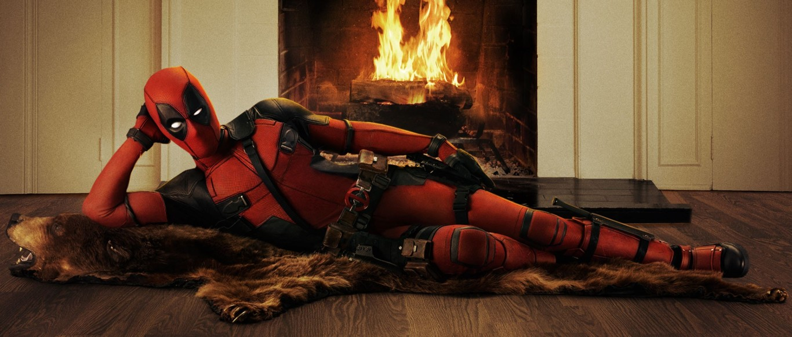
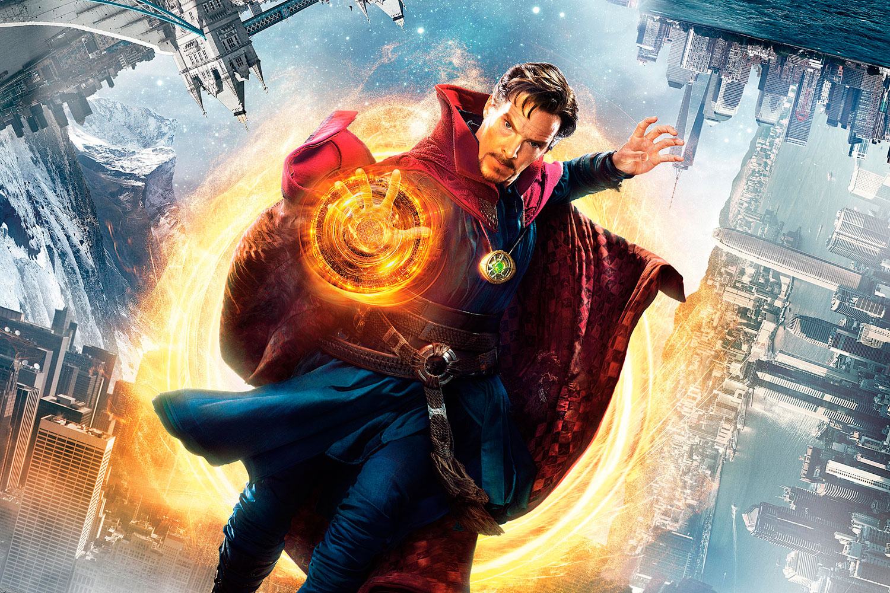

Anthony Edward Stark, conocido como Tony Stark, es un multimillonario magnate empresarial estadounidense, playboy e ingenioso científico, quien sufrió una grave lesión en el pecho durante un secuestro en el Medio Oriente. Cuando sus captores intentan forzarlo a construir un arma de destrucción masiva crea, en cambio, una armadura para salvar su vida y escapar del cautiverio

Deadpool, cuyo nombre real es Wade Winston Wilson, es un mercenario desfigurado con la capacidad sobrehumana de regeneración y destreza física. El personaje es conocido como el "Merc with a Mouth" debido a su tendencia a hablar y bromear constantemente, incluyendo la ruptura de la cuarta pared para el efecto humorístico y los gags.

Stephen Strange era un prestigioso y arrogante cirujano hasta que un trágico accidente acaba con su talento para la medicina y también con su carrera. Buscando una forma de recuperar sus habilidades, recorre el mundo y acaba encontrando a la Anciana, una enigmática profesora que se ofrece a enseñarle las Artes Místicas.